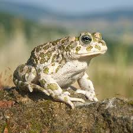
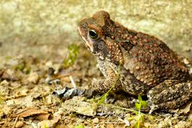
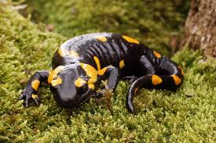
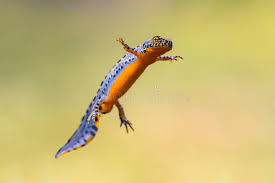
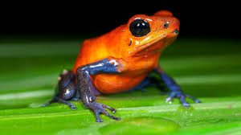

(Bufo bufo)
El sapo común (Bufo bufo) es un anfibio que habita en Europa, Asia y partes del noreste de África. Se encuentra en una variedad de hábitats, incluyendo bosques, praderas, zonas urbanas y aguas estancadas. Este anfibio es conocido por su piel arrugada y su capacidad para sobrevivir en diferentes ecosistemas, aunque su población está disminuyendo debido a la destrucción de hábitats y la contaminación.
Caracteristicas

(Rhinella marina)
El sapo de caña es un anfibio terrestre y de gran tamaño que habita en América Central y del Sur. Se encuentra en prados abiertos y bosques abiertos, evitando áreas forestales. Este sapo es conocido por su piel seca y verrugosa, y sus glándulas venenosas que lo hacen tóxico para muchos depredadores. Se ha introducido en varias regiones del mundo, especialmente en el Caribe y el Pacífico, para controlar plagas agrícolas, aunque ha causado problemas en sus hábitats nativos.
Caracteristicas

(Salamandra salamandra)
La salamandra es un anfibio urodelo de la familia Salamandridae, comúnmente conocido por su color negro con manchas amarillas. Su hábitat se encuentra en zonas terrestres y acuáticas, preferentemente en áreas con elevadas humedades, como bosques no perennes y riachuelos claros
Caracteristicas

(Ichthyosaura alpestris)
es un anfibio típico de montaña, conocido por su cabeza ancha, hocico largo y redondeado, ojos prominentes con iris dorado y pupila negra. se encuentra en hábitats de tierras boscosas y áreas montañosas en Europa. Prefiere aguas tranquilas como charcas, lagos y corrientes lentas, y puede vivir hasta 2500 metros de altitud.
Caracteristicas

(Phyllobates terribilis)
La rana dardo venenosa es un pequeño anfibio de la familia Dendrobatidae, famoso por ser uno de los animales más tóxicos de la Tierra, con pieles de colores brillantes (amarillo, rojo, azul) que advierten a los depredadores. endémico de las selvas húmedas de Colombia. especie fascinante que habita principalmente en selvas tropicales húmedas de América Central y del Sur.
Caracteristicas